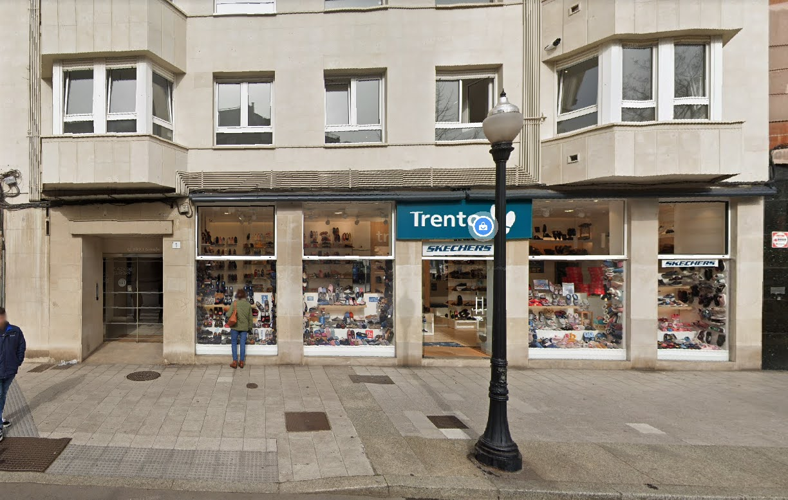
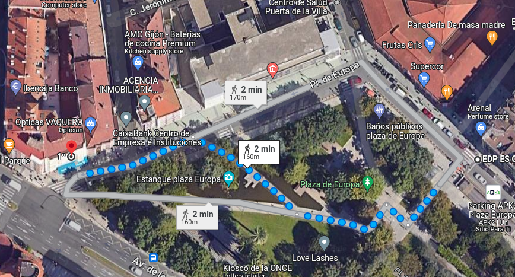
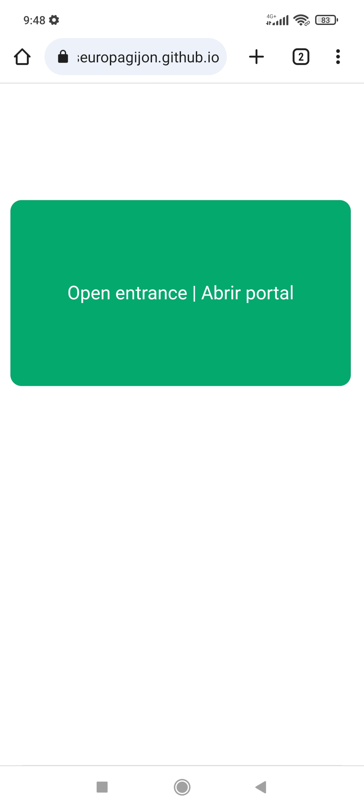
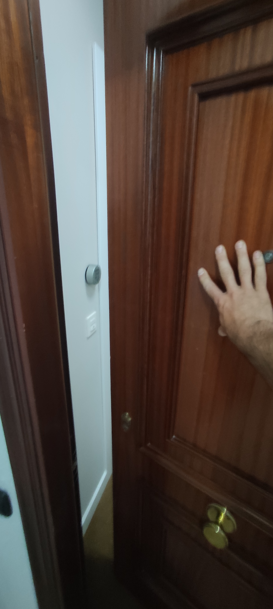
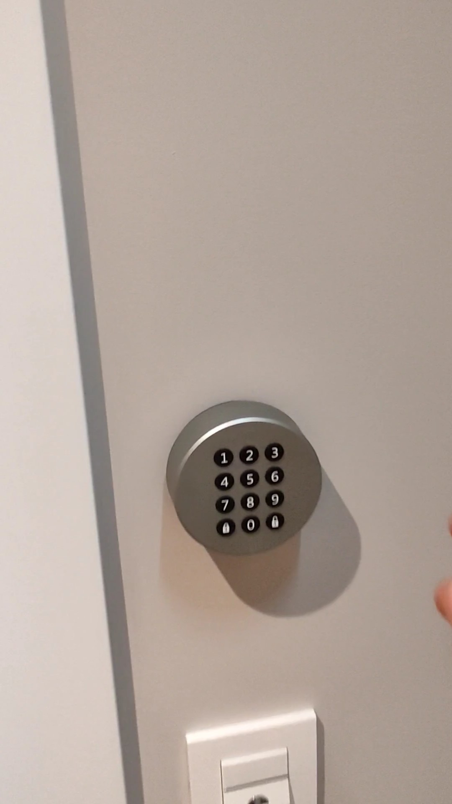
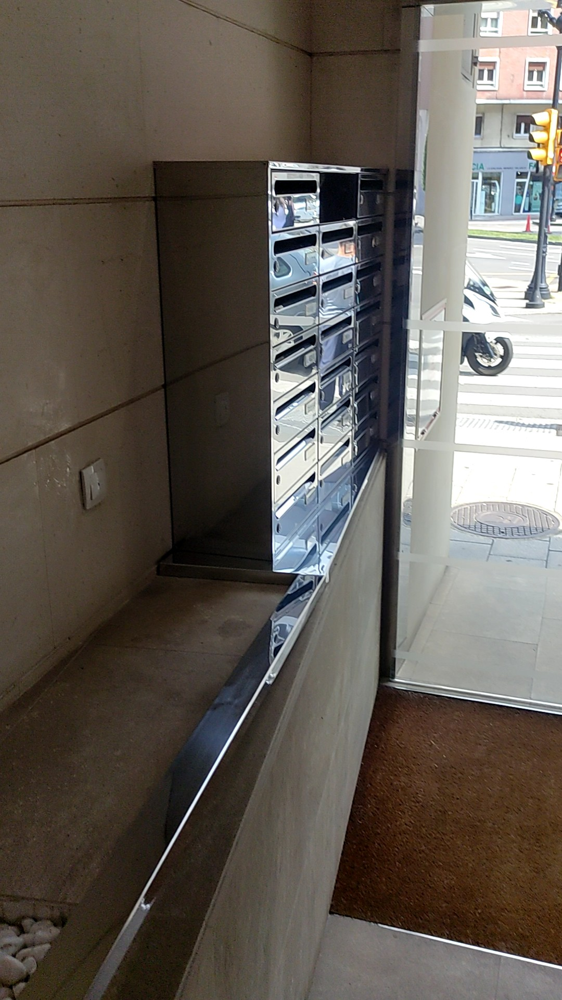
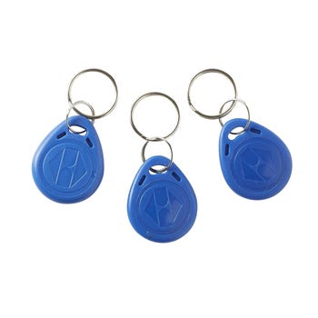

La dirección del apartamento es Plaza de Europa 1. Gijón.
The apartment address is Plaza de Europa 1. Gijón.

El aparcamiento en las calles del alrededor es de zona azul, de pago de Lunes a viernes: de 9:00 a 14:00 horas y de 16:00 a 20:00 horas y Sábado: de 9:00 a 14:00 horas
El Parking APk2 Plaza de Europa está justo en frente del apartamento, la salida a unos 100 metros caminando.
Parking on the nearby streets is regulated, paid meters from 9-14 and 16-20 Monday to Fridays and 9-14 on Saturdays
Parking APk2 Plaza de Europa is just in front the apartment, the pedestrian entrance is a bit more than 100 meters walking.

La puerta de acceso a la calle es de cristal automática, para abrirla accede a la página web: Apertura portal Y pulsa el botón verde. Tras unos segundos la puerta se abrirá y podrás acceder al portal. La dirección de la página web es:
https://apartamentoseuropagijon.github.io/portal/
puedes copiarla en tu navegador y guardarla para usar durante tu estancia.
To open the street entrance you should access the webpage: Open door and press the green button.
You can type the web adrress
https://apartamentoseuropagijon.github.io/portal/
into your browser to use during your stay.

Toma el ascensor o las escaleras y sube al primer piso. Verás una puerta de madera como en la foto, empujala y se abrirá sin cerradura dando paso a un pequeño hall hacia nuestros apartamentos, en tu caso es el situado a la izquierda.
Take the lift or stairs to the first floor, you will find a wood door that you can push to open, you will access a small hall to our properties, your apartment is the left door.

Tu apartamento es el primero izquierda. Podrás ver en la pared un teclado que te permite abrir la puerta. Para ello introduce el código de cuatro dígitos que te facilitaremos por mensaje y luego pulsa la tecla del candado abierto 🔓
La puerta se abrirá y ya tienes acceso al apartamento.
Your apartment is First Floor left door. You will see a touchpad like in the photo. Introduce the four digit code we will send you by message and then press the open lock button 🔓. The door will open and you will have access to the apartment.

Cada vez que salgas, para cerrar el apartamento debes pulsar la misma clave y después el botón con el candado cerrado , la cerradura se cerrará automáticamente.Para salir del portal puedes usar la aplicación del movil o pulsar el interruptor situado al lado de los buzones como aparece en la foto.
When you leave the apartment you should type the same Code and then press the lock button, the door should lock. To open the street door from inside you can use the webpage on you cellphone or press the wall switch beside the mail boxes as seen in the photo.

También dejaré dentro del apartamento una llave azul para abrir el portal desde el exterior por si no queréis usar el acceso con el móvil. El acceso al apartamento es exclusivamente con el teclado
I will also leave inside the apartment a blue key like in the photo to open the street entrance from outside if you prefer It to using your cell phone.
The access to the apartment is exclusively through the keypad.

La clave wifi es:
SSID: Apto Pl Europa 1
Contraseña: PlazaEuropa1Gijon
Para cualquier emergencia los teléfonos de contacto son:
Laura : 699486400
Ángel: 696461295
Wifi access is:
SSID: Apto Pl Europa 1
Contraseña: PlazaEuropa1Gijon
For any emergency please contact us at:
Laura : 699486400
Ángel: 696461295